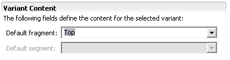
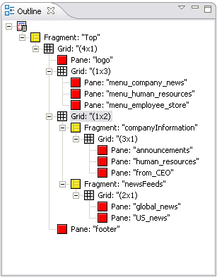

The structure for the Smartphone home page is basically similar to the PC, but omits the photo strip, stock price and title.
Because phones have limited display capability, you often need to modify the content sent to them. Text can be very difficult to read if users have to scroll it both horizontally and vertically, for example.
MCS allows you to split your content into a series of pages with links to provide navigation between them. Each individual page generated from a larger layout is called a fragment.
Each fragment contains one or more panes. Content directed to these panes will appear in the fragment that contains them. Notice that this completely decouples the structure of the pages from the structure of the content, allowing you freedom in the way that material is fragmented on different devices.
Fragment attributes define the text used in the links and the styling applied.
In this module we will use the Eclipse Outline view to work with the layout structure. At all times, the Outline, Design and Format Attributes views stay synchronized.
The first step in creating a fragment set is to create a root fragment for the whole page. This fragment will contain the links to the other fragments. The other fragments each contain a link back to the root fragment. So users can select and traverse the links just as they would for any other web link.
As you develop the layout, use the same pane names as you did in the PC layout.


Here are the fragment attributes values you need to enter.
| Name | Link Styleclass | Link Text |
|---|---|---|
| Top | fraglink | |
| companyInfo | Company Information | |
| newsFeeds | News Feeds |
This table summarizes the attribute values that are required for panes in this layout.
| Name | Width | Border Width | Cell Padding | Cell Spacing | Horizontal Alignment | Vertical Alignment | Markup Optimization | Filter Useability Below |
|---|---|---|---|---|---|---|---|---|
| logo | 100% | 0 | 0 | 0 | Never | 0 | ||
| announcements | Left | Top | ||||||
| human_resources | ||||||||
| from_CEO | ||||||||
| global_news | ||||||||
| US_news | ||||||||
| footer | ||||||||
| menu_company_news | 33% | Center | Top | Always | ||||
| menu_human_resources | ||||||||
| menu_employee_store |